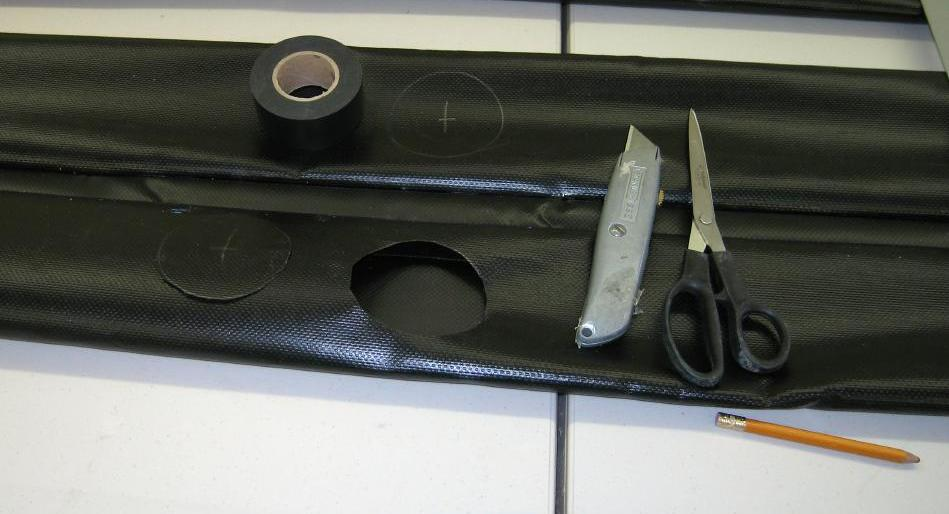

| Sonnet ( Sleeves) | Menu Previous Page Next Page |
|

Folbot sponsons have the inflation stems at the center of the sponson. Mark off a 2.5" (63.5mm) circle on the inside center of the sleeves and cut out with a knife or scissors. This opening will allow easy access for insertion / removal of the sponson.
|
|